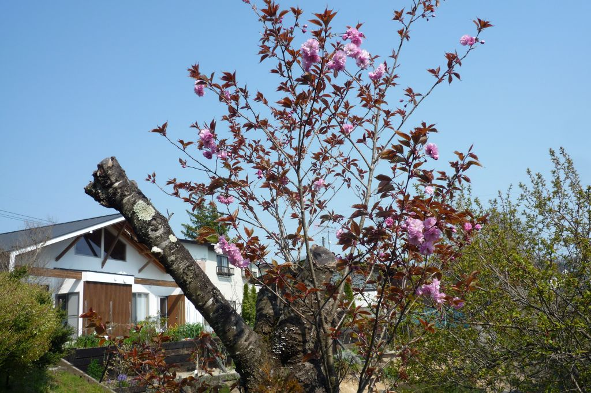

2020(R2) 4月
2020/04/30 14:34 庭
増えてきました。

2020/04/27 16:11 庭
咲き始めた八重桜。
2020/04/24 14:13 庭
ほぼ満開。
2020/04/18 08:03 猫
朝の訪問。
2020/04/17 14:51 庭
何だったかな、咲き始めました。
2020/04/17 13:46 林宅寺近く
何とか桜。＜ーー芝桜
2020/04/17 13:41 大学病院
こっちも終わり。
2020/04/17 13:41 大学病院
枝垂れも終わり。
2020/04/14 12:13 輪王寺
ちょうど満開。
2020/04/14 10:52 東北福祉大 国見
市内より遅く 満開。